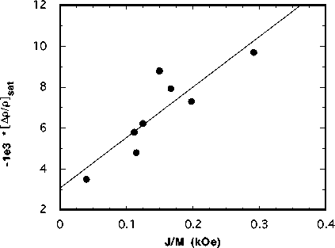

Figure 5: Transverse magnetoresistance
magnitude at 6 kOe as a function of the coupling J/M for a
series of Fe-Cr-Fe sandwiches. The coupling is varied by
changing the Cr thickness. The solid line is the best linear
fit to the data.